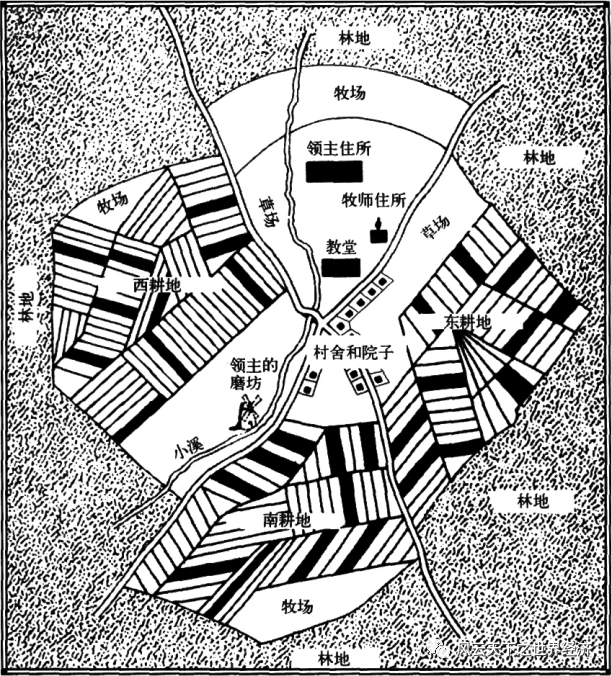
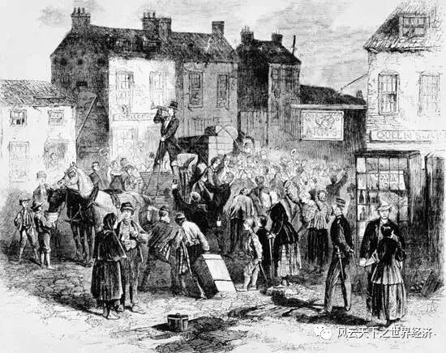
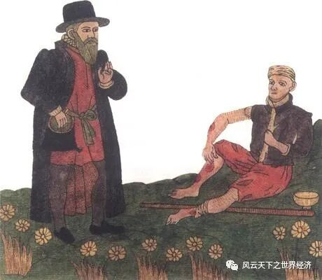

写下这些文字的是我《世界经济史》课堂上聪慧的同学们 而这个系列早在2014年首次开课时就已预约 八年后当她以如此风姿脱岫而出时 我体会到了信念被兑付后的小欣喜 深沉的经济史与年轻的思考在这里相遇 激荡出灵动的弦歌 以及渐次苏醒的思想 为这个“小风云”系列 我特意选了“总有人正年轻”这样一个名字 其含义正如你所料，这门课虽然以史为名 但是我们真正寄予其中的是未来 一万两千年世界经济史风云浩荡 恰似过去留给我们的一个巨大谜面 关于人类财富增长秘密的蛛丝马迹隐没其中 等待年轻的他们去破解 ——鲁晓东
序言
圈地运动始于15世纪末，终于19世纪初，圈地者通过各种方式，将农民与土地分离，并在土地上建立了牧场和资本主义式大农场，推动了英国的资本主义发展，为资本主义革命奠定了基础。但是，一提起圈地运动，人们往往将其定义为是“羊吃人”的运动，这其实是有所偏颇的。本文讲述了一个虚构的故事，以一本并不存在的手记作为线索，穿插“我”与林尔的交谈，试图恢复 16 世纪都铎王朝时期的圈地运动的全貌，从贵族领主的改变、农民的境遇、政府的态度等多个方面更客观、更全面地讲述圈地运动，探讨英国是如何通过圈地运动实现资本的原始积累。
2045 年 5 月 11 日，考古学家在英格兰西北部坎布里亚郡的阿托亚斯庄园遗址中，发现了一本保存较为完整的手记。经过考古学家的鉴定，这本手记是由16世纪初，都铎王朝时期阿托亚斯庄园的主人威廉·坦姆所作，其中详细记录了威廉·坦姆从少年时期到老年时期的所见所闻所想。威廉·坦姆生活的时代正是圈地运动盛行的时期，坦姆作为圈地运动的参与者，其手记中记录了大量与圈地运动有关的见闻。他从一个亲历者的角度，为历史学家研究当时的圈地运动提供了丰富的史料。这本珍贵的手记在经过专业人士的修复后，被送往大英博物馆保存。
今天，我和我的好友林尔，有幸能够来到大英博物馆，见到坦姆手记的真迹，一起探讨圈地运动是怎样使当时的英国获得资本的原始积累，从而为英国的资本主义发展奠定基础。
我和林尔迈入展室的那一刻，四周的灯光一下变得幽暗下来，我花了几秒钟才适应了眼前的昏暗，看清了这个展室的布局。听说这个展室的很多布置和元素参考了阿托亚斯庄园的景致。我怀着激动的心情，直奔玻璃展柜中的手记真迹而去。展览灯下，微微泛黄的羊皮纸上陈列着一行行工整的笔迹，可以看出字迹的主人受过良好的教育。
林尔不知何时也已观赏完周围的布置，站在我的身边欣赏手记。他对都铎王朝时期的文学颇有研究，我便请他帮我讲解这手记上记录的内容，林尔欣然答应。
4月11日 天气晴朗 成为庄园领主的第一天。 父亲说，从今天起，我就是阿托亚斯庄园的主人了，这里的奴仆、佃户、粮食和花园，都由我来管理。初接手庄园，我在欣喜之余，也有些负担。父亲是坎布里亚郡最优秀的庄园领主，我会成为像他那样优秀的领主吗？管家向我汇报了庄园的事务。上天！我竟不知道管理一个庄园竟是如此繁琐，好在从小父亲就有意培养我管理方面的知识，因此庄园事务于我而言只是冗杂，倒并不棘手……我暗暗发誓，一定要好好料理阿托亚斯庄园……
1636年鲁本斯笔下的西欧封建庄园
“这是坦姆在青年继承庄园时的日记，此时的庄园仍是以发展农业为主的传统庄园。”林尔向我解释道。我点点头，继续听他讲解。
林尔又为我讲解了几页，大致是如何管理庄园云云，并没有什么新奇之处。我们走向下一个展柜。这时，林尔突然对我说：“展柜的装饰变了。”
我依言看向手记周围的装饰，之前的手记周围布置的是金黄的麦地，而这一页手记周围的布置却变成了羊群。
“看来，这一页手记记录了很重要的事情，也许是历史中的一个转折点。”我猜测道。
“没错。”林尔点点头，迫不及待地为我翻译手记上的内容——
8月10日 天气小雨 今日我参加了克利尔伯爵的晚宴。在晚宴上，我遇到了我的老朋友施顿，他给我讲了一个神奇的故事。有一个叫做斯宾塞的佃户，通过购买和承租的方式围圈了一些土地，并将土地改造成牧场。凭借着牧场的收益，他又接二连三地购买了更多的土地，将这些原本是耕地或林地的土地全部变为牧场。就这样，凭借着牧场的经营，他成为了两个庄园的主人。 不可思议！不可思议！施顿信誓旦旦地对我说这是真人真事。我将信将疑，他便告诉我，如今的牧场确实是如此暴利。自从新的海上道路开辟后，我们本土制造的呢绒便远销海外，如今是供不应求，羊毛价格也自然水涨船高……他还与我分析了牧场的种种好处，比如比种植作物所需雇佣的劳动者少得多……施顿对我说，如今他也打算回去重新规整自己庄园的土地，用于牧场养殖。听他如此分析，我也难免心动，只是这其中利害，我还要好好考察一番，才好做决定……
圈地运动起因：牧业的利益驱使 or 更高效率地耕作？
“这就是圈地运动发生的原因了，”我笃定地对林尔说，“15 世纪末，随着新航路的开辟，英国开始与东方和美洲进行海外贸易，其中英国的羊毛纺织品由于质地柔软，质量优良，成为了畅销品，羊毛价格也因此走高。羊群养殖能够比传统的农业种植带来更大的利益，但是需要更广阔的土地，因此，英国的贵族领主们在利益的驱动下开始圈占土地，从事牧业。”
林尔点点头，不过他似乎并不完全赞同我的观点：“你说的确实是圈地运动起因的主流观点。长期以来，一提起圈地运动，人们总是认为圈地就是为了养羊，但是事实未必如此。19世纪末，叶利达姆通过史实和数据，提出有相当一部分的圈地行为是为了更有效率地耕作。毕竟，英国并不是每一寸土地都适合养羊，真正农场变牧场的只是少数，多数圈地的目的还是为了明确土地产权，提高耕作效率。《十六世纪农业问题》一书对当时的65个农场进行了统计，总体来看，大部分土地还是用于耕种，第二用途才是放牧、养殖。”
“你说的也有一定道理，不过不管是当时的史料记载还是现在的历史研究，都更倾向于描绘和叙述耕地变牧场这个事实。至于圈地的主要目的到底是耕地变牧场还是提高耕作效率，还需要进一步的考证。”我思索着对林尔说。林尔也点点头，继续阅读坦姆手记。
9月4日 在屋中闷坐一日，天气未知 圈地，圈地，圈地！这几天饭也顾不上吃，咖啡也喝不上几口，只顾着忙活圈地的各种事务。自从上一次从施顿那里听说了圈地的种种好处后，我去各个庄园考察了一番，又进城参观了纺织工厂，终于真正下了圈地的决心。 我一向是很有行动力的。如今土地已经规整了大半，虽难免挫折，但所幸并没有发生流血斗殴、状告诉讼之类的头疼事。这些都是其他庄园吃过的苦头，如今我们需千万小心，既有前车之鉴，便不可步其后尘。
圈地运动发起者：领主圈地 or 佃农圈地？
“大量的庄园领主都像坦姆这样圈占土地，将农场改造为牧场，身份也从地主贵族转变为资产阶级化的新贵族。”我感叹道，“这些人，原本的财富来源是封建的地租，圈地运动后，财富来源便成了资本主义的利润，而这个利润显然高于未圈地之前。根据16世纪农学家图瑟尔的估计，圈地是条田地价值的3倍。”
林尔似乎还是对我的观点有所异议：“你说得不错，不过圈地运动的发起者不是只有这些地主贵族，也有相当数量的佃农。”
“佃农？”我心中微微诧异。
林尔点点头：“同样是来自叶利达姆的观点，他认为圈地运动可以分为两种类型，领主圈地和佃农圈地。这一观点也得到了后世盖伊、沃勒斯坦等人的赞同。在坦姆的日记中，他的朋友施顿给他讲的那个故事的主人公斯宾塞就是一个佃户，通过圈地运动不断进行资本积累。后来凭借厚实的家产，在17世纪时，斯宾塞家族晋升为贵族。”

敞田制下的庄园布局（资料来源：朱迪斯·Ｍ．本内特、Ｃ．沃伦·霍利斯特著，杨宁、李韵译：《欧洲中世纪史》，上海：上海社会科学院出版社2007年版，第171页）
佃农圈地的途径与目的——大农群体的形成
“我不明白，”我对林尔提出质疑，“庄园领主对庄园有一定的控制权，因而在圈占土地上占有主动权，那么佃农又是如何圈占土地呢？他们圈占土地的目的与领主相同吗？”
“佃农进行圈地运动的途径主要是互换条田和零碎圈地。互换条田可以将他们分散的土地进行整合，使他们拥有的土地更加集中；零碎圈地是以蚕食的方式圈占荒地。农民的圈地运动使得耕作效率提高，从而从共同体耕作向单独耕作转变。一部分的农民通过圈地运动富裕起来，就形成了所谓的大农群体。大农经济与领主直领地经济形成竞争，有力的抢占了农业市场，这也是很多庄园领主退出农业生产领域，放弃农业转向牧业的因素之一。”
“原来如此，”我不禁佩服林尔的学识，“原来圈地运动并没有我想象得那么简单。”
林尔谦虚道：“我也不过是鹦鹉学舌，引用前人的成果罢了。”说罢，仍继续阅读手记。
10月3日 天气阴 心中所虑之事还是发生了。今日十余名佃户过来寻我。他们既已没有了土地，便也没有什么理由和资本在庄园里待下去。他们问我怎么办，一个个面带忧虑之色。 我也不由得为他们未来的生计担忧，于是给他们指了条明路：“去城里工作吧！我见过城里的工厂，那里宽敞而又明亮，只要每天完成规定的工作，工厂厂主就可以给你们按月发足额的工资，岂不比每天辛勤劳作还要靠天吃饭要稳定得多？” 他们一听，大部分人都觉得这是个可行的生计。有一部分人虽然看上去不愿意，但也无可奈何，只好也跟着大部分人去了。 上帝保佑，他们能有口饭吃！

圈地运动后，原来的农民转化为雇佣工人
圈地方式：暴力圈地 or 合法圈地？
“这便是资本家的伪善之处，”我不禁鄙夷这位作古之人的文过饰非，“无怪乎马克思在资本论中写道：‘资本来到世间，从头到脚，每个毛孔都滴着血和肮脏的东西。’这些曾经的庄园领主，后来的资本家们，将农民与他们赖以生存的土地剥离，使他们朝夕之间成为无产者，并把他们抛到劳动市场，榨干他们的每一分剩余价值，还要惺惺作态，做出一副悲天悯人的模样来；也无怪乎托马斯·莫尔在《乌托邦》中写道：‘你们的羊，一向是那么驯服，那么容易喂饱，据说现在变得很贪婪、很凶蛮，以至于吃人，并把你们的田地、家园和城市蹂躏成废墟。贵族豪绅使所有的地耕种不成，把每寸土都围起来做牧场，房屋和城镇给毁掉了，只留下教堂当作羊栏。’领主通过暴力和欺诈剥夺了农民的所有，用一条栅栏把成千上万亩土地圈占——圈地运动就是一场‘羊吃人’的运动。”
林尔点点头：“庄园领主以非法的手段圈占土地，将佃农从土地上驱逐，这确实是人们提起圈地运动时经常想起的典型画面，但这并不是历史的全部。以往的文学家们和史学家们都或多或少地夸大了暴力圈地的程度和影响。前面我们已经提到，圈地运动的参与者不止领主，如今我们又要合理质疑，非法圈地和暴力圈地也不是领主唯一的圈地方式。”
“这我知道，”我赶紧抢答，“领主圈地分为契约圈地、法庭圈地和强制性非法圈地三种，暴力圈地指的只是强制性非法圈地这种。”
“没错，”林尔接过我的话，“契约圈地就是领主利用土地契约的时效性进行圈地。在租约的有效期内，领主不能无视契约直接进行圈占，而只能等待。当租约到期，领主便可以合法地收回土地并不再缔结新的契约。法庭圈地是指领主凭借法庭的判定而圈占土地。法庭能够阻止领主非法圈地，但也能够为领主圈地赋予合法性。
“不过政府的司法机构在圈地运动中的有效性和公平性令人怀疑，毕竟史料中记载了许多实际上损害了佃农利益的案件。所以说，在圈地运动中，部分佃农确实在一定意义上是利益受损方，因而也得到了文学创作者们的同情与支持。在后来广为流传的诗作与小说中，有相当一部分以圈地运动为题材的文学作品都是以批评暴力圈地为主调的。
“然而，暴力圈地虽然暴露出圈地运动黑暗的一面，但其并不是主流和标志。在盛行圈地的莱斯特郡，其郡史记载，暴力圈地所占比例很小，并且在16世纪中叶以后，领主与佃户之间的协议圈地越来越普遍。英国历史学家卡特勒也认为，实际上16世纪‘以圈地为目的的非法驱逐很少见’。”
1月4日 天气晴朗 新的一年又开始了。去年可真是让人难忘的一年，在这一年里庄园大变样，昔日的农田都变成了牧场。事实证明我的选择是正确的，不然即使是庄园每天24小时不停歇地运转，恐怕也不能够创造出现在这样多的财富。土地便是金钱，金钱便是土地。在这个时代，只要拥有了土地，便是拥有了一切。 2月5日 天气阴 最近政府又对圈地查得严得很，真是让人头疼……
政府的态度：从反圈地到鼓励圈地
“这是指16世纪上半叶政府针对圈占土地颁布的各种法令，”林尔说，“1518年，沃尔西发布的大法官令要求在40天内废除自1485年以来圈占的土地，1528年再次发布宣言，要求拆除自1485年以来在所有地产上建造的篱笆、栅栏。不过法令内容虽然严厉，实际的效果却一般，但也足以看出这个时期政府对圈地运动的态度。
“但是到了16世纪末，政府对圈地运动的态度发生了一百八十度的转变。1593年，国会废除了反圈地法令，从而引发了又一波圈地狂潮。到了17、18 世纪，圈地运动已经成为政府鼓励的活动。议会通过了圈地法令，以更公正、更科学并且全国通用的圈地条例进行圈地运动，使圈占土地更合法、更有序地进行。”
我点点头，去看下一个展柜，此时手记周围布置的羊群装饰消失了。“看来下一页又会有不一样的内容。”我心想。
5月4日 天气晴朗 近日逐渐感觉身体不支，也许我已经不再适合继续工作了。我的儿子，我相信他比我更加优秀，能够把我的产业继承下去。遥想我的父亲，也就是他的祖辈，那时的庄园还是一派田园诗中的景象，而仅仅是几十年间，就从麦苗到羊群，发生了大变样，真是神奇！ 如今的国家也在圈地的风气下大变样子了。从前，国家的各个庄园自给自足，鸡犬相闻。自从新航路发现后，越来越多的商人出海进行远洋贸易，国内的庄园也变成了牧场，为畅销海外的呢绒提供羊毛原材料，城里也建起了大工厂，昔日的农民从庄园进入工厂，为这些新兴的工厂主们出力。 有人对这种变化是不满的，但更多人还是满意的，这其中就包括我。如今已经不是从前靠作物吃饭的年代了。钱生钱，利无穷，这才是如今的致富之道。

圈地运动使大量农民流离失所
资本的原始积累：书写血泪史的原罪or人类进步的阵痛？
“坦姆在手记中说的这些话，一言以蔽之，就是圈地运动为英国实现了资本的原始积累。”林尔总结道。
坦姆在手记中描绘的生活是幸福而安定的，但在少数像坦姆一样的凭借圈地发家的领主、大农背后，是无数失去土地，被迫成为工厂廉价劳动力的农民。他们被剥夺了自己赖以生存的土地，又有严苛的法律禁止他们流浪，只能进城被新兴的资本家榨干全部的劳动价值。我不禁想起马克思在《资本论》中的那句话：“在真正的历史上，征服、奴役、劫掠、杀戮，总之，暴力起着巨大的作用。……事实上，原始积累的方法绝不是田园诗式的东西。”
我不由得看向身边同样在沉思的林尔，提出我的疑问：“你觉得，资本的原始积累是带有原罪的吗？从圈地运动，到三角贸易，再到鸦片战争，这些历史无一不是用带着血与泪的文字写就。但时至今日我们评价圈地运动，虽不免批评其对农民利益的损害，却还是更多侧重于肯定其对英国资本主义发展的意义。如果资本的原始积累真的带有原罪，那我们是应当拒绝还是接受这种发展方式呢？”
林尔扶了扶眼镜，并没有回答我的问题，反而问道：“如果，我是说如果，圈地运动没有发生，后来的英国会变成怎样？”
“我虽然不能回答你的问题，但是我能模仿你的问题造一百个句子，”我同样对他的问题避而不答，“如果哥伦布没有发现新大陆，如果瓦特没有改良蒸汽机……我们可以做出千千万万条假设，但事实却只有一个。我们现在所能做的，就是从历史的真相中，发掘出能够帮助人类走得更远的经验。麦克卢汉不是有句话嘛，‘我们用后视镜看现在，倒退着走向未来。’”
尾声
坦姆手记中的字迹逐渐稀疏，每一页的结束，都意味着坦姆光阴的减少。最后一个展柜是整个展室最幽暗的地方，只用一盏电子灯模拟一支将要燃尽的蜡烛，象征着坦姆已是风烛残年。这个展柜中只有一页纸，上面写着一行字：
“我的人生如白驹过隙，很快便要成为历史长河中的一粒沙尘。我所在的时代是宇宙时钟中的短短一秒，它或许是一段历史的结束，又或许是另一段历史的开端。”
当林尔诵读的声音落下的那刻，远远地有报时的钟声响起，却并不真切。我们迈出大英博物馆的大门，秋季的伦敦正是大雾弥漫之时，行人穿雾而来，与我擦肩而过，又隐没于雾中。我站在十字街道的中央，向前看皆是茫茫，回头看亦是茫茫。
（本文人物、故事纯属虚构）
参考文献 [1]黄少安,谢冬水.“圈地运动”的历史进步性及其经济学解释[J].当代财经,2010(12):11-18. [2]吾文泉.18 世纪圈地运动与英国诗歌的乡村写作[J].文学教育(下),2015(08):22-23. [3]韩啸.论圈地运动和英国下层农民的土地权利[J].法制与社会,2011(13):281-282. [4]周颖.论圈地运动与英国资本主义的发展[J].青春岁月,2013(21):385-386. [5]侯建新.圈地运动与土地确权——英国16世纪农业变革的实证考察[J].史学月刊,2019(10):5-46. [6]吉喆.西方学者关于16世纪圈地运动的研究述评[J].安庆师范学院学报(社会科学版),2016,35(04):31-35. [7]沈汉.重新认识英国早期圈地运动[J].英国研究,2012(00):1-19+11. [8]骆海鹰.走过”羊吃人”的地方[J].文化交流,2009(05):58-61. [9]托马斯·莫尔.乌托邦[M].戴镏龄译.北京:商务印书馆,2016:21-22. [10]马克思.资本论(第一卷)[M].北京:人民出版社,1963:7.